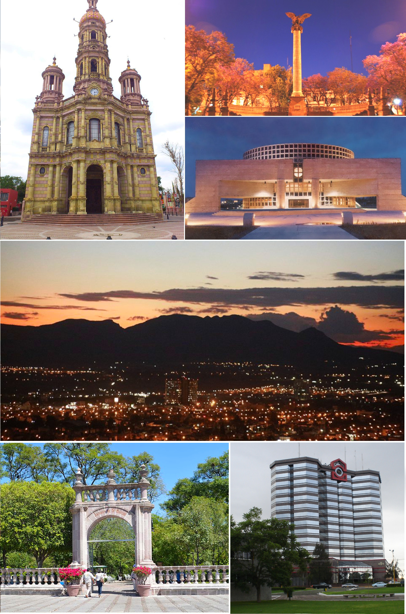

Antes de convertirse en la ciudad que conocemos hoy, la región que hoy es Aguascalientes estaba habitada por grupos indígenas, principalmente chichimecas y guachichiles, que vivían de la caza, la pesca y la agricultura en pequeña escala. La región era conocida como "Nueva Galicia" durante la época de la colonización española.
En el siglo XVI, las fuerzas españolas bajo el mando de Nuño Beltrán de Guzmán llegaron a la región, marcando el inicio de la colonización. La ciudad de Aguascalientes en sí tiene sus raíces en una pequeña villa fundada en 1575 por Juan de Montoro, llamada originalmente "Villa de Nuestra Señora de la Asunción de las Aguas Calientes". El nombre "Aguascalientes" proviene de las aguas termales cercanas a la villa que se usaban con fines terapéuticos.
El Siglo XIX y la Independencia de México
En el siglo XIX, Aguascalientes desempeñó un papel significativo en la lucha por la independencia de México. Durante la Guerra de Independencia, que comenzó en 1810, la región fue escenario de enfrentamientos entre las fuerzas insurgentes lideradas por Miguel Hidalgo y José María Morelos, y las fuerzas realistas leales a la corona española.
La ciudad de Aguascalientes cambió de manos varias veces durante este período, pero finalmente se unió a la causa insurgente. Uno de los episodios más destacados de la historia de Aguascalientes es la firma de los "Sentimientos de la Nación" en 1813, un documento que pedía la independencia de México y la creación de una república. Esta declaración fue promovida por José María Morelos y fue firmada en Chilpancingo, Guerrero, pero algunos de sus partidarios eran originarios de Aguascalientes.
Tras la independencia de México en 1821, Aguascalientes se convirtió en un estado de la nueva nación. A lo largo del siglo XIX, la región experimentó un crecimiento económico, en parte debido a su ubicación estratégica en el centro del país y su conexión con el ferrocarril que unía México con la costa del Pacífico.
La Revolución Mexicana y el Siglo XX
Aguascalientes se destacó por ser uno de los primeros estados en adoptar reformas sociales y laborales. En 1915, la ciudad se convirtió en el centro de la Convención de Aguascalientes, un intento de reconciliar las facciones rivales de la Revolución Mexicana, liderado por Venustiano Carranza y Emiliano Zapata. Aunque este esfuerzo no logró una paz duradera, fue un hito importante en la búsqueda de un México más equitativo y justo.
Durante el gobierno de Lázaro Cárdenas en la década de 1930, se implementaron reformas agrarias y laborales que afectaron positivamente a la región. Se llevaron a cabo la expropiación de tierras y la creación de ejidos, lo que benefició a los campesinos y promovió una mayor equidad en la distribución de la tierra.
Aguascalientes

En las décadas siguientes, Aguascalientes se convirtió en un importante centro industrial y automotriz en México. Grandes empresas automotrices, como Nissan, establecieron plantas en la ciudad, lo que impulsó la economía local y atrajo a una población creciente.
Aguascalientes también se ha destacado en el ámbito cultural, con eventos como la Feria Nacional de San Marcos, una de las ferias más antiguas de México, que atrae a visitantes de todo el país. La ciudad se ha desarrollado como un importante centro de educación y cultura en la región, albergando museos, teatros y universidades.
La historia de Aguascalientes en el siglo XX es un testimonio de su evolución de una ciudad con una rica herencia histórica a un centro industrial y cultural en constante crecimiento en México.